Non-Local Means Image Denoising
In this demo, we will learn:
- about Non-local Means Denoising algorithm to remove noise in an image.
- how to use functions like cv.fastNlMeansDenoising, cv.fastNlMeansDenoisingColored, and cv.fastNlMeansDenoisingMulti
Sources:
Contents
Theory
We have previously seen many image smoothing techniques like Gaussian Blurring, Median Blurring, etc. and they were good to some extent in removing small quantities of noise. In those techniques, we took a small neighbourhood around a pixel and did some operations like Gaussian weighted average, median of the values, etc. to replace the central element. In short, noise removal at a pixel was local to its neighbourhood.
There is a property of noise. Noise is generally considered to be a random variable with zero mean. Consider a noisy pixel,
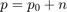 where 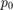 is the true value of pixel and  is the noise in that pixel. You can take large number of same pixels (say 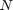) from different images and computes their average. Ideally, you should get 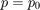 since mean of noise is zero.
is the noise in that pixel. You can take large number of same pixels (say 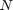) from different images and computes their average. Ideally, you should get 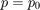 since mean of noise is zero.
You can verify it yourself by a simple setup. Hold a static camera to a certain location for a couple of seconds. This will give you plenty of frames, or a lot of images of the same scene. Then write a piece of code to find the average of all the frames in the video. Compare the final result and first frame. You can see reduction in noise. Unfortunately this simple method is not robust to camera and scene motions. Also often there is only one noisy image available.
So idea is simple, we need a set of similar images to average out the noise. Consider a small window (say 5x5 window) in the image. Chance is large that the same patch may be somewhere else in the image. Sometimes in a small neigbourhood around it. What about using these similar patches together and find their average? For that particular window, that is fine. See an example image below:

The blue patches in the image looks the similar. Green patches looks similar. So we take a pixel, take small window around it, search for similar windows in the image, average all the windows and replace the pixel with the result we got. This method is Non-Local Means Denoising. It takes more time compared to blurring techniques we saw earlier, but its result is very good. More details and online demo can be found in the following resources:
For color images, image is converted to CIELAB colorspace and then it separately denoise L and AB components.
OpenCV provides four variations of this technique:
- cv.fastNlMeansDenoising: works with a single grayscale images
- cv.fastNlMeansDenoisingColored: works with a color image.
- cv.fastNlMeansDenoisingMulti: works with image sequence captured in short period of time (grayscale images)
- cv.fastNlMeansDenoisingColoredMulti: same as above, but for color images.
Common arguments are:
- H: parameter deciding filter strength. Higher H value removes noise better, but removes details of image also. (10 is ok)
- HColor: same as H, but for color images only. (normally same as H)
- TemplateWindowSize: should be odd. (recommended 7)
- SearchWindowSize: should be odd. (recommended 21)
1) cv.fastNlMeansDenoising, cv.fastNlMeansDenoisingColored
First we show how to remove noise from color/grayscale images. (Noise is expected to be gaussian).
Options
do_color = true; do_noise_gauss = true; do_noise_saltnpepper = false;
Image
Load image (either grayscale or color)
src = cv.imread(fullfile(mexopencv.root(),'test','lena.jpg'), 'Color',do_color); dst = src;
Noise
Add Gaussian noise
if do_noise_gauss m = 0; % noise mean sd = 0.4 * std(double(dst(:)) / 255); % noise standard deviation if mexopencv.require('images') dst = imnoise(dst, 'gaussian', m, sd^2); else noise = randn(size(dst)) * sd + m; dst = double(dst)/255 + noise; dst = min(max(dst, 0), 1); dst = uint8(dst * 255); end end
Add Salt & Pepper noise
if do_noise_saltnpepper prcnt = 0.01; % noise density if mexopencv.require('images') dst = imnoise(dst, 'salt & pepper', prcnt); else mask = rand(size(dst)); dst(mask < prcnt/2) = 0; dst(mask > 1 - prcnt/2) = 255; end end
Show noisy image
subplot(121), imshow(src), title('original') subplot(122), imshow(dst), title('noisy') fprintf('PSNR = %.6f\n', cv.PSNR(src, dst));
PSNR = 20.896842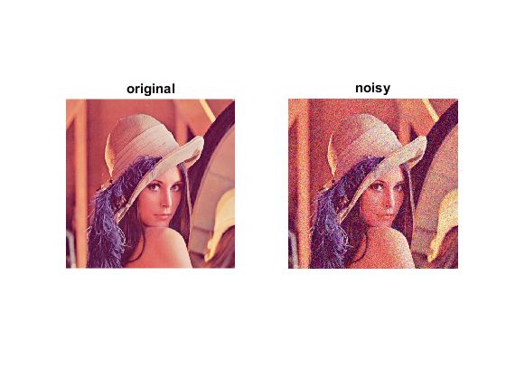
Denoise
Compare various image denoise techniques
imgs = cell(5,1); names = cell(size(imgs)); for i=1:numel(imgs) tic switch i case 1 str = 'Box Filter'; out = cv.boxFilter(dst, 'KSize',[7 7]); case 2 str = 'Gaussian Filter'; out = cv.GaussianBlur(dst, 'KSize',[7 7], 'SigmaX',5, 'SigmaY',5); case 3 str = 'Median Filter'; out = cv.medianBlur(dst, 'KSize',3); case 4 str = 'Bilateral Filter'; out = cv.bilateralFilter(dst, 'Diameter',7, 'SigmaColor',35, 'SigmaSpace',5); case 5 str = 'Non-Local Means Filter'; if size(dst,3) == 1 out = cv.fastNlMeansDenoising(dst, 'H',9); else out = cv.fastNlMeansDenoisingColored(dst, 'H',9, 'HColor',9); end end t = toc; imgs{i} = out; names{i} = str; fprintf('%-23s : [PSNR = %.6f] Elapsed time is %f seconds.\n', ... str, cv.PSNR(src, out), t); end
Box Filter : [PSNR = 27.064057] Elapsed time is 0.032708 seconds. Gaussian Filter : [PSNR = 27.272195] Elapsed time is 0.020858 seconds. Median Filter : [PSNR = 27.257955] Elapsed time is 0.053008 seconds. Bilateral Filter : [PSNR = 24.196976] Elapsed time is 0.044703 seconds. Non-Local Means Filter : [PSNR = 25.448762] Elapsed time is 1.178667 seconds.
Show results
for i=1:numel(imgs) figure, imshow(imgs{i}), title(names{i}) end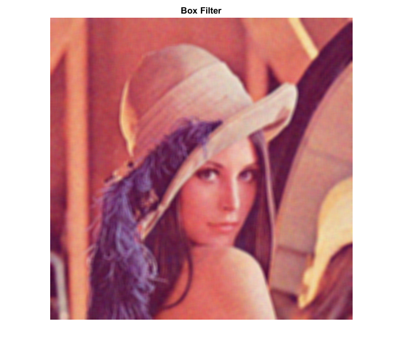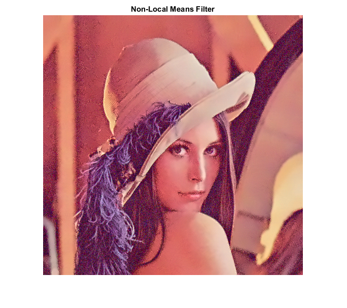
Show as movie for easy comparison
if ~mexopencv.isOctave() && mexopencv.require('images') %HACK: IMPLAY not implemented in Octave for i=1:numel(imgs) imgs{i} = cv.putText(imgs{i}, names{i}, [10 20], ... 'Color',[255 255 0], 'LineType','AA', ... 'FontFace','HersheyPlain', 'FontScale',1.2); end implay(cat(4, imgs{:}), 1) end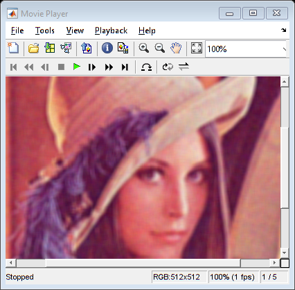
2) cv.fastNlMeansDenoisingMulti
Now we will apply the same method to a video.
- The first argument of the function is the list of noisy frames.
- Second argument imgToDenoiseIndex specifies which frame we need to denoise, for that we pass the index of frame in our input list (0-based).
- Third is temporalWindowSize which specifies the number of nearby frames to be used for denoising. It should be odd.
In that case, a total of temporalWindowSize frames are used where central frame is the frame to be denoised. For example, you passed a list of 5 frames as input. Let imgToDenoiseIndex = 2 and temporalWindowSize = 3. Then frame-1, frame-2 and frame-3 are used to denoise frame-2.
Video
Open input video
if ~mexopencv.isOctave() && mexopencv.require('images') fname = fullfile(toolboxdir('images'), 'imdata', 'AT3_1m4_%02d.tif'); else fname = fullfile(mexopencv.root(), 'test', '768x576.avi'); end cap = cv.VideoCapture(fname); assert(cap.isOpened());
Noise
Read first 10 frames, and create noisy frames
len = 10; srcs = cell(len,1); dsts = cell(len,1); for i=1:len % get frame and convert to grayscale src = cap.read(); assert(~isempty(src)); src = cv.cvtColor(src, 'RGB2GRAY'); srcs{i} = src; % add Gaussian noise noise = randn(size(src)) * 10; dst = double(src) + noise; dst = min(max(dst, 0), 255); dst = uint8(dst); dsts{i} = dst; end
cap.release();
Denoise
Denoise each frame considering 5 nearby frames
out = cell(len,1); for i=1:len tic if i > 2 && i < len-1 out{i} = cv.fastNlMeansDenoisingMulti(dsts, i-1, 5, 'H',6, ... 'TemplateWindowSize',7, 'SearchWindowSize',35); else % skip images on the timeline border with insufficient neighbors out{i} = dsts{i}; end toc end
Elapsed time is 0.001082 seconds. Elapsed time is 0.000352 seconds. Elapsed time is 2.658743 seconds. Elapsed time is 2.733849 seconds. Elapsed time is 2.602693 seconds. Elapsed time is 2.631372 seconds. Elapsed time is 2.557090 seconds. Elapsed time is 2.659948 seconds. Elapsed time is 0.001488 seconds. Elapsed time is 0.000062 seconds.
Show results for the 3rd frame
figure
subplot(221), imshow(srcs{3}), title('original')
subplot(222), imshow(dsts{3}), title('noisy')
subplot(223), imshow(out{3}), title('denoised')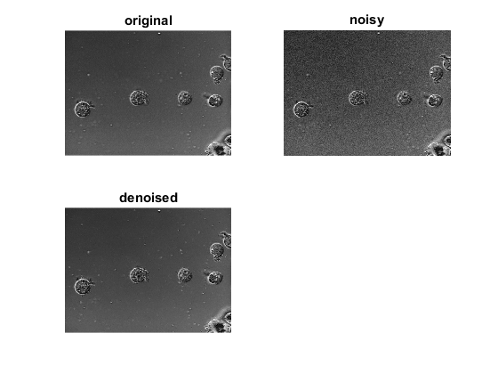Show as movie
if ~mexopencv.isOctave() && mexopencv.require('images') implay(cat(4, out{:}), 1) end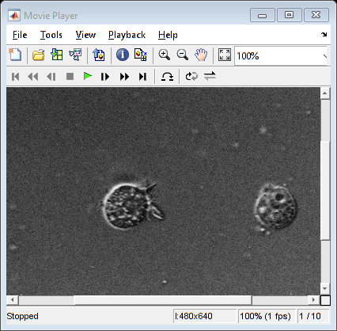